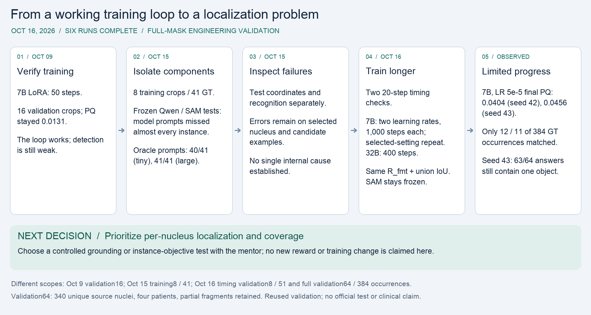

COMPLETE — all six runs finished their requested steps without a recorded failure. Final snapshot: 2026-10-16 04:02 EDT. The six model runners total 4.205 hours; the supervisor window is 4.222 hours, excluding allocation setup. This completes the experiment plan; reliable nucleus detection remains unresolved.
Markdown and evidence · Vector SVG · PNG for slides

All 64 seed-43 answers are format-valid, but 63 emit exactly one object and one emits two. The validation cohort contains 63 multi-nucleus crops. Higher foreground union IoU and reliable formatting did not fix multi-object localization: the best main-run total remains 12/384 matched occurrences (3.125% micro recall).
| Full64 run | Steps completed | Macro PQ before → after | Macro recall before → after | Matched GT occurrences | Valid answers |
|---|---|---|---|---|---|
| 7B · LR 1e-5 · seed 42 | 1,000 | 0.02265 → 0.02668 | 0.02154 → 0.02532 | 9 → 10 / 384 | 62 → 61 / 64 |
| 7B · LR 5e-5 · seed 42 | 1,000 | 0.02265 → 0.04045 | 0.02154 → 0.04522 | 9 → 12 / 384 | 62 → 64 / 64 |
| 32B · LR 1e-5 · seed 42 | 400 | 0.01414 → 0.01687 | 0.01618 → 0.02334 | 7 → 10 / 384 | 47 → 46 / 64 |
| 7B · LR 5e-5 · seed 43 | 1,000 | 0.02265 → 0.04555 | 0.02154 → 0.04457 | 9 → 11 / 384 | 62 → 64 / 64 |
The controlled seed-42 comparison favors LR 5e-5 on final validation PQ (0.04045 versus 0.02668), but this is a result on reused validation, not a robust preferred learning rate. The selected 5e-5 repeat reaches PQ 0.04555 with seed 43, while matched occurrences fall from 12 to 11 and count MAE worsens compared with seed 42. The repeat tests one selected setting; the 1e-5 arm was not repeated at seed 43. The 32B run used 400 steps versus 1,000 for 7B, so differences cannot be attributed solely to model size.
| Full64 run | Foreground union IoU | Count MAE | Same-GT duplicate extras | Raw-mask overlap pairs |
|---|---|---|---|---|
| 7B · LR 1e-5 · seed 42 | 0.06430 → 0.11411 | 4.922 → 4.938 | 0 → 1 | 15 → 8 |
| 7B · LR 5e-5 · seed 42 | 0.06430 → 0.20144 | 4.922 → 4.703 | 0 → 2 | 15 → 2 |
| 32B · LR 1e-5 · seed 42 | 0.05324 → 0.04852 | 4.516 → 4.641 | 0 → 0 | 3 → 0 |
| 7B · LR 5e-5 · seed 43 | 0.06430 → 0.20817 | 4.922 → 4.984 | 0 → 0 | 15 → 0 |
Macro PQ and macro recall average crops equally; matched totals count crop-level occurrences. Invalid responses yield empty masks and remain in every denominator. Duplicate extras count raw SAM masks matched to the same GT at IoU > 0.5; overlap pairs measure a different event. The 5e-5 seed-42 single-nucleus crop accounts for about 69% of its net macro-PQ gain, so improvement is uneven. No denominator is changed from 384 to 340.
| Timing run | Steps | Macro PQ before → after | Matched GT occurrences | Valid answers |
|---|---|---|---|---|
| 7B timing | 20 | 0.01584 → 0.01098 | 1 → 1 / 51 | 8 → 8 / 8 |
| 32B timing | 20 | 0.00000 → 0.01260 | 0 → 1 / 51 | 6 → 6 / 8 |
Eight fixed validation crops, 51 GT occurrences / 51 unique source nuclei. This is an exact subset of validation64, separate from the older eight training crops / 41 occurrences. Do not pool their scores.
| Run | Steps | Nonzero-gradient steps | Training-loop min | Total runner min | Peak allocated GiB |
|---|---|---|---|---|---|
| 7B timing | 20 | 19 / 20 | 0.85 | 1.57 | 16.44 |
| 32B timing | 20 | 20 / 20 | 2.54 | 4.51 | 63.67 |
| 7B · LR 1e-5 · seed 42 | 1000 | 999 / 1000 | 58.83 | 61.82 | 17.18 |
| 7B · LR 5e-5 · seed 42 | 1000 | 999 / 1000 | 53.57 | 56.38 | 17.18 |
| 32B · LR 1e-5 · seed 42 | 400 | 400 / 400 | 70.35 | 82.27 | 63.96 |
| 7B · LR 5e-5 · seed 43 | 1000 | 1000 / 1000 | 43.17 | 45.74 | 17.18 |
One H200 allocation. Training-loop time includes intermediate validation and checkpoint work. Total runner time also includes loading and before/after evaluation/saving. Peak allocated memory covers training steps; it is not the entire process peak. The 1,000-step runs each had nine intermediate evaluations, and the 400-step run had three.
Every run starts a fresh base policy and new language-LoRA adapter (rank 8); SAM2.1 tiny and the Qwen vision encoder remain frozen. Rewards stay R_fmt + binary foreground union IoU against full reference masks. PQ, recall, count error and duplicate diagnostics are evaluation measures, not extra rewards. Main runs use the same full64 before/after evaluation and every-100-step monitoring, with greedy decoding for evaluation. These tables use final checkpoints, not the best intermediate evaluation. All six final adapters changed and all SAM/vision freeze checks passed.
The frozen dataset has 256 training crops from 19 contributing patients and 64 validation crops from four different patients. Validation contains 384 crop-level GT occurrences from 340 unique source nuclei; adjacent non-overlapping crops can include fragments of the same source nucleus. No patient or source instance crosses the new train/validation split. Sixty-one of 64 validation crops include partial nuclei. The 1–8-instance capacity filter excludes dense crops, and patient-balanced sampling changes prevalence. This is selected engineering validation, not whole-image MoNuSeg test evaluation.
Validation was reused for monitoring and setting selection, including selection of LR 5e-5 for the seed-43 repeat; it is not an untouched test. Four patients and a limited seed comparison restrict conclusions. Masks, counts and coordinates were not supplied as image-specific Qwen prompts, but the reward uses full masks: this is not weak-label training. Official test data were not used in this suite. No SOTA, clinical-accuracy or deployment claim is supported.
Next research decision: prioritize a controlled test of per-nucleus localization and coverage. The current reward can improve foreground coverage while leaving most separate instances unmatched. Agree with the mentor whether to test a grounding warm-up or a better-aligned instance objective, with an appropriate control, before changing the training setup. Neither change was part of this completed suite.
Standalone reports contain exact metrics, provenance, raw before/after records and fixed examples. The historical translation audit remains unchanged.